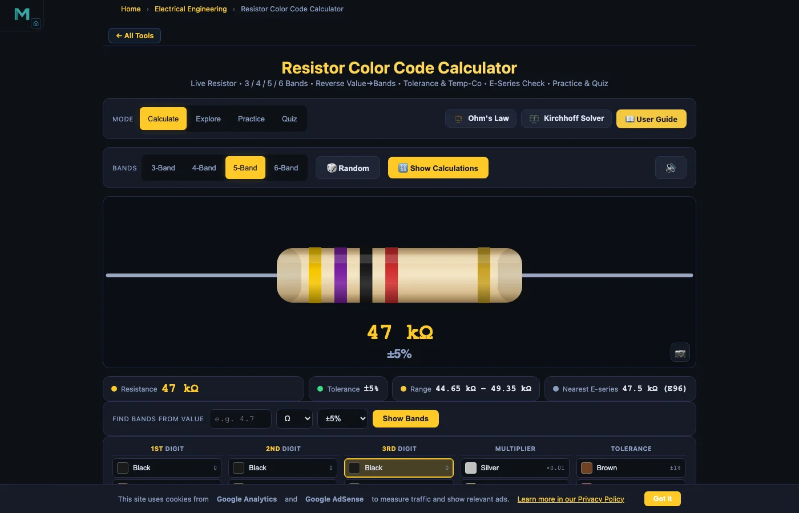
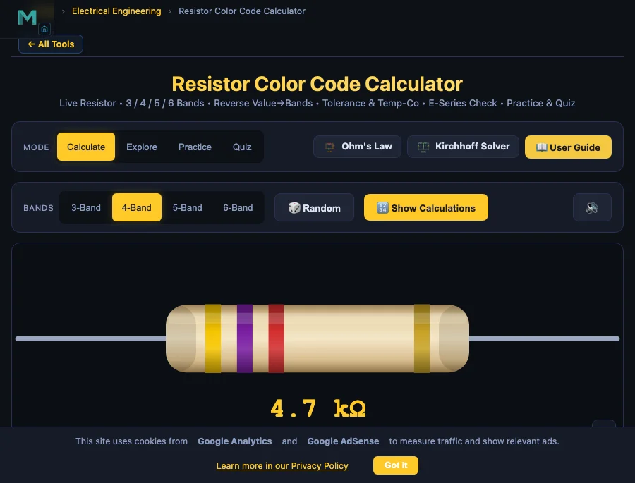

Why the colour code is still worth learning properly

Modern multimeters measure resistance in seconds, so it is tempting to skip the colour code entirely. But resistors are not always in circuit when you need to identify them. A parts bin, a component reel, a bag of assorted pull-outs: the colour code is the only label they have. An electronics student who cannot read it fluently is slowed down at exactly the moment they should be building circuits, not looking things up.
The other issue is direction. A resistor that looks like it could be read either way often has an obvious answer if you know the colour code well: one reading gives a standard catalogue value and the other gives a nonsense number. The E-series badge in this calculator makes that check instant.
The tool pairs well with the Ohm's Law guide, which covers what happens once you put a decoded resistor into a live circuit. Reading the value is only useful if you know what to do with it next.
What the resistor color code calculator does
The tool covers all four standard formats used in through-hole component electronics:
- 3-band: two digit bands and a multiplier, no tolerance ring (implies ±20%)
- 4-band: two digit bands, a multiplier, and a tolerance band (the most common format)
- 5-band: three digit bands, a multiplier, and a tolerance band (precision metal-film parts)
- 6-band: same as 5-band, plus a temperature coefficient ring
Select the band count from the Bands bar. Colour swatches appear below the resistor diagram, one column per band. Click a swatch and the band on the resistor repaints instantly. The readout badges at the top update live:
- Resistance: the decoded value in ohms, kilohms or megohms
- Tolerance: the percentage spread (for example ±5% for a gold band)
- Range: the minimum and maximum the resistor can be at that tolerance
- Temp Co: temperature coefficient in ppm/°C (6-band only)
- Nearest E-series: the closest standard catalogue value, with a tick when your reading lands exactly on one
Press Show Calculations for a step-by-step breakdown: digits, multiplier, the arithmetic, and the nearest standard value with explanation.
How the colour code actually works
The rule is the same regardless of band count. Read from the end opposite the tolerance band (that end is often slightly closer to one lead). Each band plays a fixed role:
- Digit bands: each encodes one decimal digit (black = 0 through white = 9)
- Multiplier band: a power of ten (black = ×1, red = ×100, gold = ×0.1)
- Tolerance band: the percentage accuracy (gold = ±5%, brown = ±1%)
- Temperature coefficient band (6-band only): how much the value drifts per degree Celsius
The value is built as:
For a 4-band resistor, that means two significant digits. For 5 and 6-band, three significant digits. The difference sounds small but matters when you need to hit a gain of exactly 10.00 rather than somewhere between 9 and 11.
The full EIA resistor color code chart
| Colour | Digit | Multiplier | Tolerance | Temp Co (ppm/°C) |
|---|---|---|---|---|
| Black | 0 | ×1 | — | 250 |
| Brown | 1 | ×10 | ±1% | 100 |
| Red | 2 | ×100 | ±2% | 50 |
| Orange | 3 | ×1 k | — | 15 |
| Yellow | 4 | ×10 k | — | 25 |
| Green | 5 | ×100 k | ±0.5% | 20 |
| Blue | 6 | ×1 M | ±0.25% | 10 |
| Violet | 7 | ×10 M | ±0.1% | 5 |
| Grey | 8 | ×100 M | ±0.05% | 1 |
| White | 9 | ×1 G | — | — |
| Gold | — | ×0.1 | ±5% | — |
| Silver | — | ×0.01 | ±10% | — |
| None | — | — | ±20% | — |
Reading 4-band resistors: the common case
The 4-band carbon-film resistor is what most lab kits and hobby packs contain. Find the tolerance band (gold or silver), put it on the right, and read the other three bands left to right.
Example: brown-black-red-gold. Band 1 is brown (1), band 2 is black (0), band 3 is red (×100), band 4 is gold (±5%). Value: .
If you ever read a resistor and the result is not a recognised value (something like 1.37 kΩ or 83 Ω), you almost certainly have it backwards. Flip it and try again. Real catalogue parts land on E-series values, and the nearest E-series badge in the calculator confirms this instantly.
5-band and 6-band resistors: precision parts

Five-band resistors carry one extra digit band, pushing precision to three significant figures. The same reading rule applies: find the tolerance band (usually brown = ±1% or red = ±2%), put it on the right, and read bands 1, 2 and 3 as a three-digit number. Band 4 is the multiplier, band 5 is tolerance.
Example: brown-green-black-brown-brown. Bands 1-3 are 1, 5, 0 (= 150). Band 4 is brown (×10). Band 5 is brown (±1%). Value: 150 × 10 = 1500 Ω (1.5 kΩ) ±1%.
Six-band parts add one more ring for temperature coefficient. Brown (100 ppm/°C) means the value can drift by up to 0.01% per degree Celsius. That matters in a precision voltage reference or a Wheatstone bridge measurement, but in most digital work the sixth band can be ignored. The calculator shows the temp-co badge automatically when you select 6-Band mode.
Reverse lookup: value to bands
Sometimes you need to go the other direction: you know the resistance you need and want to know what to order or pull from the parts bin. The Find Bands From Value bar handles this. Type the value, pick the unit (milliohm, ohm, kilohm, megohm or gigohm), select a tolerance, and press Show Bands. The resistor diagram and the swatch selectors update to the correct colour combination.
For 4.7 kΩ at ±5% in 4-band mode, the result is yellow-violet-red-gold. Switch to 5-band and the same value becomes yellow-violet-black-brown-brown. If the value cannot be expressed accurately in the selected band count (for example a 3-significant-digit value in 4-band mode), the tool flags it and suggests switching.
E-series preferred values: why 4.7 kΩ exists
Resistors are not manufactured at every possible value. They follow the EIA E-series standard: E12 (12 values per decade, ±10% parts), E24 (24 values, ±5% parts), and E96 (96 values, ±1% parts). The spacing is logarithmic, chosen so that the tolerance ranges of adjacent values touch with no gaps and no overlap.
This is why 4.7, 3.3, 2.2 and 1.0 feel like magic numbers: they are the E12 values in the 1-10 decade. Any value in that sequence scales by a power of ten (470 Ω, 47 kΩ, 4.7 MΩ) to give the full E12 catalogue. The calculator's nearest E-series badge identifies which series a decoded value belongs to, and marks it with a tick when it is an exact preferred value.
Practice and Quiz modes
Practice draws a random resistor and asks you to type the decoded value. The tool adjusts the unit shown (ohms, kilohms or megohms) so answers stay in clean numbers. Press Check and you get instant feedback plus the full worked solution. The readout badges are hidden throughout, so the answer is never sitting there waiting to be copied. A running score tracks the session.
Quiz mode gives five randomly chosen questions covering value reading, multiplier identification, tolerance band recognition, and what gold and silver mean in each position. Each question is graded live and a final star rating (1 to 5) summarises the session. Both modes draw from all four band-count formats.
Practical tips for reading real resistors
- Find the tolerance band first: it is usually gold or silver and often sits slightly further from the body end. Gold on the right, read left to right.
- If both ends look the same, check the E-series: one reading gives a standard value, the other usually does not. Pick the one that matches.
- Sub-10-ohm resistors use a gold or silver multiplier. Do not confuse the multiplier with the tolerance band; the multiplier is the third or fourth band from the left, not the last.
- A tight tolerance band (brown = ±1%, red = ±2%) on what looks like a 4-band part probably means it is a 5-band resistor and you are missing the third digit band.
- Temperature coefficient only matters for precision analog work. For most circuits, a resistor with any sixth band is fine.
Who uses this tool
Most students pick this up early in an electronics course, when a bag of assorted resistors arrives and nothing is labelled. The reverse lookup sees more use from technicians and repair engineers: you know the value you need, you want to know what to pull from the bin or order. Hobbyists rebuilding old boards use both directions. Instructors tend to run Quiz mode at the end of a colour-code lesson to check whether recognition has actually stuck before moving on to circuit assembly.
Once the value is known, the Ohm's Law simulator puts it to work in a live circuit, and the RC Circuit simulator shows what happens when that resistor is paired with a capacitor.
Frequently asked questions
How do you read a 4-band resistor?
Hold the resistor so the tolerance band (gold or silver) is on the right and read left to right. Bands 1 and 2 are the significant digits, band 3 is the multiplier, band 4 is the tolerance. Example: brown-black-red-gold gives 1, 0, ×100, ±5%, which decodes as 10 × 100 = 1000 Ω (1 kΩ) ±5%.
What do the gold and silver bands mean on a resistor?
Both colours appear in two different positions. As a multiplier (third or fourth from the left): gold = ×0.1, silver = ×0.01, used for values below 10 Ω. As the tolerance band (last): gold = ±5%, silver = ±10%. The position tells you which role it is playing.
What is the difference between a 4-band and a 5-band resistor?
A 4-band resistor gives two significant figures (e.g. 47 kΩ). A 5-band resistor adds a third digit for three significant figures (e.g. 47.5 kΩ), giving tighter precision. 5-band parts are typically metal-film with ±1% or better tolerances; most 4-band carbon-film parts are ±5% or ±10%.
What does the sixth band on a resistor mean?
The sixth band gives the temperature coefficient in ppm/°C, indicating how much the resistance changes with temperature. Brown (100 ppm/°C) is common; violet (5 ppm/°C) and grey (1 ppm/°C) are used in precision references and instrumentation. For most digital circuits the sixth band can be ignored.
Why are resistor values like 4.7 kΩ and 2.2 kΩ so common?
These are E-series preferred values. The EIA E-series (E12, E24, E96) space values logarithmically so that tolerance ranges of adjacent values touch exactly, giving complete coverage without overlap. The familiar numbers 4.7, 2.2, 3.3 and 1.0 are all E12 values, each scaling by powers of ten across the full range of manufactured resistors.
How do I find the colour bands for a specific resistance value?
Use the reverse lookup: type the value, select the unit (ohm, kilohm, megohm), pick a tolerance, and press Show Bands. For 4.7 kΩ ±5% in 4-band mode, the result is yellow-violet-red-gold. Switch to 5-band and it becomes yellow-violet-black-brown-brown. If the value cannot be expressed in the current band count, the tool flags it and suggests a different band setting.
Explore related simulators
Once you can read a resistor, put it to work. The Ohm's Law & DC Circuits simulator is the obvious next stop: resistance controls current, and that relationship is easier to see in a live circuit than on paper. For timing and filter work, the RC Circuit simulator pairs a resistor with a capacitor and shows the time constant directly. Multi-loop networks need Kirchhoff's Laws, and precision resistance measurement is covered by the Wheatstone Bridge simulator. For domestic installation work, where resistive loads connect to cables, MCBs and sockets, the Electrical Wiring Simulator and the accompanying wiring guide cover the full picture.